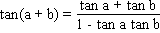

Solution to puzzle 70: One degree
Show that cos 1°, sin 1°, and tan 1° are irrational numbers.
We will use appropriate multiple angle formulae to show that, if cos 1°, sin 1°, or tan 1° are rational, then the cosine or tangent of some multiple of 1° must also be rational. By choosing a multiple of 1° for which a suitable trigonometric function is known to be irrational, we can establish each result.
cos 1°
De Moivre's theorem states that for any real number x and any integer n
cos nx + i sin nx = (cos x + i sin x)n
Expanding the right hand side using the binomial theorem, and equating real parts, we have
cos nx = cosnx - [n(n - 1)/2] cosn-2x sin2x + ...
Given that sin2x = 1 - cos2x, we can thereby express cos nx as a polynomial in cos x, with integer coefficients.
Hence, cos x rational  cos nx rational.
cos nx rational.
Equivalently, cos nx irrational  cos x irrational.
cos x irrational.
Taking n = 30 and x = 1°, since we know cos 30° =  /2 is irrational, it follows that cos 1° is irrational.
/2 is irrational, it follows that cos 1° is irrational.
sin 1°
Building on the above result, since cos 2x = 1 - 2 sin2x, we have
cos 2nx irrational  cos 2x irrational
cos 2x irrational  sin2x irrational
sin2x irrational  sin x irrational.
sin x irrational.
Taking n = 15 and x = 1°, it follows that sin 1° is irrational.
tan 1°
The standard addition formula for tangents
tells us that, if tan a and tan b are rational, then tan(a + b) is rational. (Of course, we must also have tan a, tan b, and tan(a + b) defined, so that tan a tan b  1.)
1.)
We know that tan 30° = 1 / is irrational.
is irrational.
Since 30° can be built up as a series of binary sums, beginning with 1° and 1°, it follows, by contradiction, that tan 1° is irrational.
Remarks
- The result for cos 1° can also be established through repeated application of the identity cos nx = 2 cos (n-1)x cos x - cos (n-2)x. See the credit, below, for further details.
- Notice that we do not claim sin x rational
 sin nx rational; i.e., the analogue of the result we established for cosines. In fact, this analogue does not hold. A simple counter-example would be n = 2, x = 30°.
sin nx rational; i.e., the analogue of the result we established for cosines. In fact, this analogue does not hold. A simple counter-example would be n = 2, x = 30°.
Source: cos(1 deg) = irrational on wu :: forums